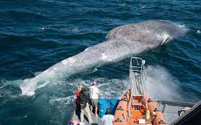

Cada vez son más las especies que se unen a las listas de animales en riesgo de desaparecer, así como los que se unen a las listas de animales extintos. Es el caso de la ballena azul o rorcual azul, que desde hace años está al borde de la extinción. Según The IUCN Red List of Threatened Species, que es el organismo internacional que registra el estado de las distintas especies animales y vegetales, como puedes ver en el enlace, la especie Balaenoptera musculus está en situación de Endangered o en peligro de extinción.
Mamíferos hay muchos, pero acuáticos y de tamaño exagerado hay pocos, como es el caso de la ballena azul, un animal que habita los mares de diferentes partes del mundo y que se caracteriza por ser el ser el animal más grande que vive en el planeta tierra. Pero no todo es alegría para la ballena azul, ya que es una especie muy codiciada por algunos humanos, lo que ha llevado a este mamífero acuático a la lista roja de la UICN como una especie En peligro de extinción.

Las ballenas azules son amenazadas por el alto tráfico pesquero de la patagonia chilena Los investigadores identificaron que las ballenas tienen serios problemas para alimentarse y desplazarse por la zona debido a la gran presencia de barcos de pesca. La especie se encuentra en peligro de extinción.
Accidentes con barcos
Debido a la gran cantidad de barcos que hay en el océano, la mayoría de gran tamaño, las ballenas azules o rorcuales azules y otros cetáceos de distintos tamaños colisionan contra estas embarcaciones, tanto por el espacio como por desorientarse debido a los sónares y la contaminación que afecta a estos animales. Estos accidentes causan tanto lesiones traumáticas de distinta índole, siendo mortales las más graves aunque tarden cierto tiempo, como la muerte directamente.
Además, esta es una amenaza creciente porque cada vez hay más barcos activos. Algunas de las soluciones que se proponen son evitar que las rutas marítimas crucen por las zonas de hábitat frecuente de las ballenas y reducir la velocidad cuando se pase cerca de ellos o por ellos, cuando no pueda evitarse cruzarlos.
Cambio climático
El cambio climático, a través del calentamiento global, está suponiendo uno de los motivos graves que afectan a los cetáceos más grandes. El aumento de la temperatura del agua hace que el alimento empiece a escasear en las regiones ártica y antártica, tanto el plancton como el krill entre otros. Esto supone que para poder encontrar alimento tienen que migrar más lejos, lo que hacen con debilidad la cual aumenta cuanto más tardan en encontrar alimento y en ocasiones mueren por ello. Además, esta subida de las temperaturas afecta también a su ciclo reproductivo.
Varamientos y muertes de ballenas por contaminación
La contaminación marina es cada vez más grave, hay tanto sustancias tóxicas como aglomeraciones de plásticos que ocupan varios km2 y exceso de sonidos. Esta contaminación hace que las ballenas se alimenten por error con plásticos y mueran, de hecho se han encontrado cadáveres que al practicarles la necropsia han revelado cantidades ingentes de plásticos en los estómagos de las ballenas. También se desorientan debido al exceso de ruido que producimos los humanos en los océanos, tanto por el motor de los barcos como con sónares, lo que las confunde y las lleva a varar en las playas y morir. También mueren intoxicadas por productos como los combustibles de los barcos, vertidos de petróleo, metales pesados, etcétera.
El gran impacto de las industrias
Todos los tipos de industria que se desarrollan en los mares y los océanos, o de las cuales sus desechos van a parar a ellos, son un grave peligro para las ballenas azules y otros cetáceos. Los puertos, los canales para el transporte, los vertederos, las petroleras, las piscifactorías, las agencias de turismo marítimo, la pesca industrial, etcétera, son todas industrias peligrosas para estos seres. Los motivos son que destruyen su hábitat, limitan su espacio, reducen la disponibilidad de su alimento, los intoxican, dañan sus oídos y sentido de la orientación, reducen su capacidad reproductiva, etcétera.